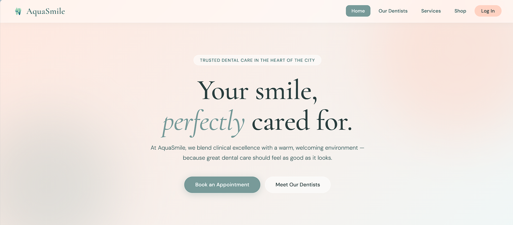
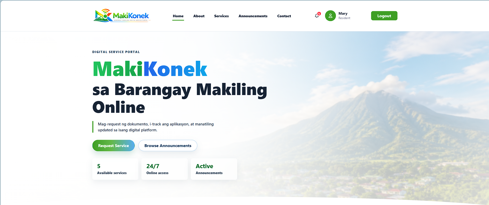
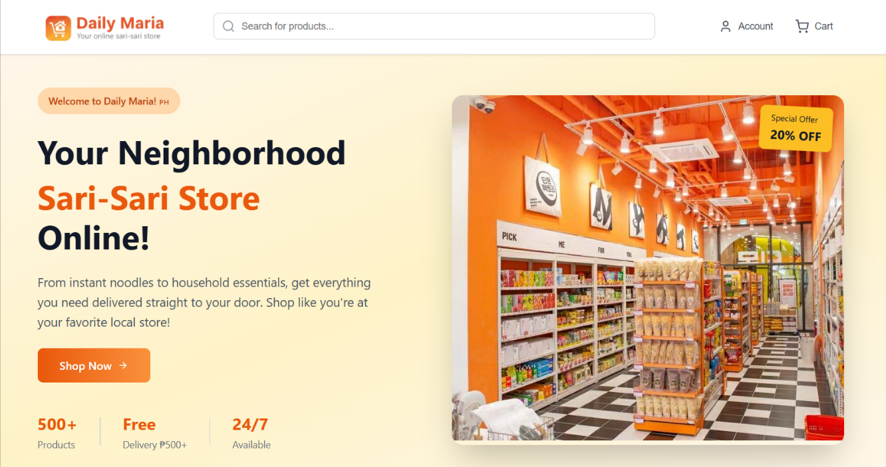

Design
I enjoy creating clean and thoughtful interfaces that are both functional and visually pleasing.
HELLO THERE!
I enjoy turning ideas into thoughtful digital experiences while learning how good design and dependable systems work together.

ABOUT
I didn’t choose Information Technology because I already knew everything.
I chose it because I was curious.
Curious about how websites work, why some interfaces feel effortless, and how technology can turn simple ideas into experiences people actually use.
Over time, that curiosity grew into something I genuinely enjoy—designing interfaces, building systems, working with databases, and testing ideas until they become better.
I’m still learning, still exploring, and still figuring things out. And honestly, that’s the part I love the most.
Education
3rd Year Student
Academic Year 2026–2027
My Interests
I enjoy creating clean and thoughtful interfaces that are both functional and visually pleasing.
I like turning ideas into real projects through frontend and backend development.
I believe learning is a continuous process, and every project is an opportunity to improve.
Small Details
Here’s what I’ve been practicing so far.
SKILLS
A growing toolkit shaped by school projects, practice, and curiosity.
Creating responsive and visually appealing user interfaces.
Building logic, managing data, and making systems work efficiently.
The applications I use to bring ideas to life.
SELECTED PROJECTS
A few things I’ve enjoyed building throughout my academic journey.
Previous Projects

Dental Clinic Appointment and E-Commerce Website
A web-based dental clinic system that allows users to book appointments and purchase dental products online.
Role: Backend Developer QA Tester
What I learned: I learned how database design, appointment flows, and user experience work together to create a functional healthcare website.

Barangay Service Request Portal
A barangay portal that allows residents to request services, book appointments, reserve facilities, and track service status.
Role: Backend Developer QA Tester
What I learned: This project taught me how to manage requests, reservations, and notifications while keeping the user experience simple and organized.

Online Sari-Sari Store Website
A simple and accessible online sari-sari store designed to showcase everyday essentials and make it easier for customers to browse available products.
Role: Sole Developer Designer
What I learned: I learned how to organize product information, create a user-friendly shopping interface, and apply visual hierarchy to make an online store easy to navigate.
Current Semester
A collection of websites built as I work through this semester’s activities.
A Bento-style website featuring a clean card-based layout, organized content, and responsive design using Bootstrap's row and column system.
View WebsiteBetween the Pages is a book discovery website that uses JSON to dynamically load book information, browse collections, and search by title or author.
View WebsiteThis activity will be added soon.